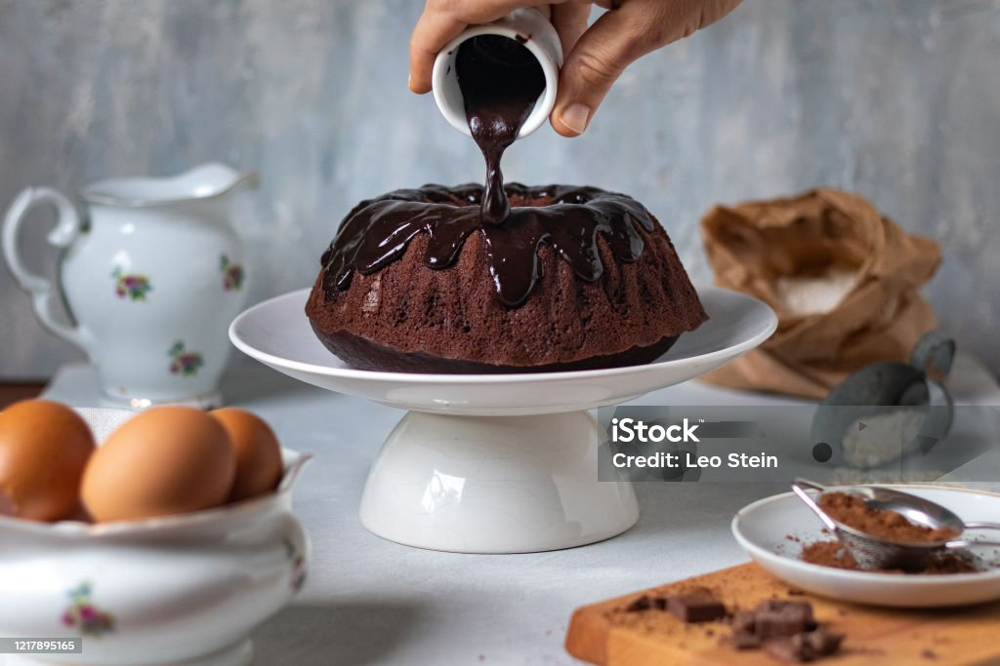

Bolo de Chocolate Simples

Ingredientes:
- 4 ovos
- 2 xícaras (chá) de açúcar
- 1 xícara (chá) de óleo
- 1 xícara (chá) de chocolate em pó
- 2 xícaras (chá) de farinha de trigo
- 1 colher (sopa) de fermento em pó
- 1 xícara (chá) de água quente
Modo de Preparo
- Bata os 4 primeiros ingredientes no liquidificador por 3 minutos.
- Acrescente a farinha de trigo e bata por mais um minuto.
- Adicione a água quente e o fermento, misturando com uma colher.
- Despeje em uma forma untada e enfarinhada.
- Asse em forno pré-aquecido a 180°C por aproximadamente 40 minutos.